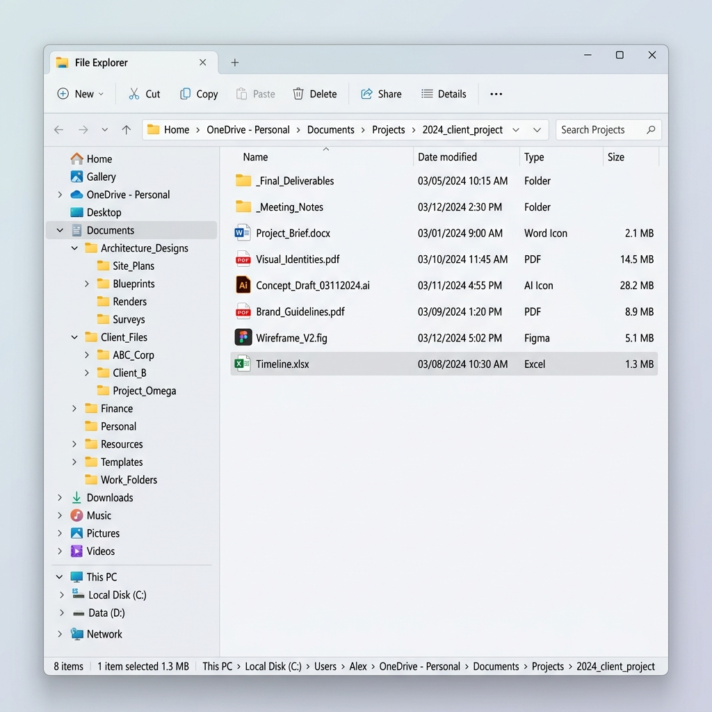
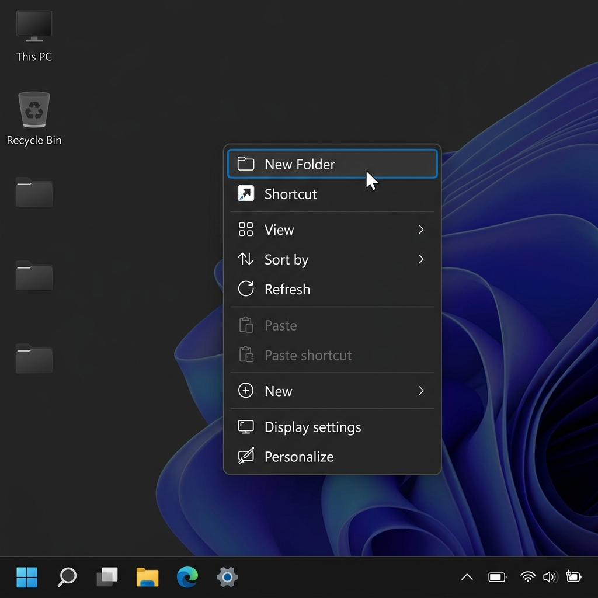

Nguyễn Hòa Bình
Sinh viên khóa K70 ngành Công nghệ Thông tin tại Trường Đại học Công nghệ, Đại học Quốc gia Hà Nội (UET-VNU).
Giới thiệu Bản thân
Tôi hiện là sinh viên khóa K70 ngành Công nghệ vật liệu tại UET. Với lòng nhiệt huyết và định hướng nghề nghiệp rõ ràng, tôi đang nỗ lực học hỏi để làm chủ các kỹ nghệ phần mềm và giải pháp trí tuệ nhân tạo hiện đại.
Môn học Kỹ năng số là cơ sở giúp tôi chuẩn hóa toàn bộ tư duy thao tác, thu thập dữ liệu và làm việc nhóm trong môi trường số hóa. Báo cáo này đóng vai trò tập hợp, lưu trữ và phản ánh các kết quả thực nghiệm cũng như bài học kinh nghiệm sâu sắc mà tôi đã gặt hái được trong học kỳ vừa qua.
Mục Tiêu Phát Triển Cá Nhân
Ngắn hạn: Học tập nền tảng
Duy trì điểm số học tập xuất sắc (GPA cao) tại UET. Nắm vững cấu trúc dữ liệu, giải thuật, lập trình hướng đối tượng (OOP) và cơ sở dữ liệu. Hoàn thành xuất sắc đồ án.
Trung hạn: Tích lũy thực tế
Tìm kiếm cơ hội thực tập tại các tập đoàn công nghệ lớn. Học hỏi sâu về kiến trúc Web hiện đại và tích hợp AI. Tham gia nghiên cứu khoa học cùng giảng viên UET.
Dài hạn: Chuyên gia công nghệ
Trở thành Senior Software Architect hoặc AI Engineer chuyên nghiệp. Thiết kế và triển khai các hệ thống phần mềm lớn đóng góp giá trị thực tế cho cộng đồng.
Máy tính và các thiết bị ngoại vi
Thao tác cơ bản với tệp tin và thư mục trong môi trường Windows.
1. Mục tiêu & Giới thiệu
Làm chủ các kỹ năng quản trị tệp tin cơ bản trong hệ điều hành Windows để tổ chức không gian dữ liệu khoa học. Đây là bước đầu tiên để tổ chức không gian làm việc số khoa học, bao gồm điều hướng ổ đĩa, tạo thư mục, di chuyển, đổi tên, sao chép, và quản lý thùng rác nhằm tối ưu hóa tổ chức dữ liệu cá nhân.
2. Các bước thực hiện
- Sử dụng tổ hợp phím
Windows + Eđể mở File Explorer. - Tạo thư mục làm việc chính
ThucHanh_NguyenHoaBinhtrên ổ đĩa dữ liệu. - Tạo tệp văn bản
GhiChu.txt, sau đó thực hiện đổi tên thànhGhiChuQuanTrong.txt. - Tạo thư mục con
TaiLieu; thực hiện sao chép (Copy-Paste) tệp ghi chú vào thư mục con này. - Tạo tệp
DiChuyen.txtvà thực hiện di chuyển (Cut-Paste) vào thư mục conTaiLieu. - Thực hành xóa tệp vào Recycle Bin, xóa vĩnh viễn (
Shift + Delete), và khôi phục tệp.
3. Hình ảnh hệ thống


4. Minh chứng học tập
Xem Báo cáo Bài 1 (Bai1.pdf)Khai thác dữ liệu và thông tin
Tìm kiếm và đánh giá thông tin học thuật có độ tin cậy cao.
1. Chủ đề nghiên cứu & Nguồn dữ liệu
Chủ đề nghiên cứu: Tác động của Trí tuệ nhân tạo đến thực trạng việc làm và tỷ lệ thất nghiệp trong ngành CNTT.
Nguồn dữ liệu: Khai thác 12 tài liệu (gồm 7 bài báo KH chất lượng cao) từ 5 nguồn: Google Scholar, tạp chí Science, sách chuyên khảo Yale, báo cáo WEF/McKinsey, và Forbes.
2. Đánh giá độ tin cậy tiêu biểu
| Tài liệu (Harvard Style) | Loại nguồn | Đánh giá nhanh | Xếp loại |
|---|---|---|---|
| Noy & Zhang (2023) Science, 381(6654) |
Tạp chí KH | Đăng trên tạp chí Science (Top 1); Tác giả MIT; Trích dẫn >800. Độ tin cậy tuyệt đối nhờ bình duyệt. | Xuất sắc |
| Peng et al. (2023) arXiv preprint |
Hội thảo | Tác giả Microsoft/MIT; Nghiên cứu trực diện năng suất. Tuy nhiên có xung đột lợi ích. | Xuất sắc |
| Acemoglu & Restrepo (2020) | Tạp chí KH | Tác giả Nobel Daron Acemoglu; Mô hình toán lượng; Trích dẫn >4000. Khung lý thuyết vững chắc. | Rất cao |
| Kelly, J. (2024) Forbes Magazine |
Internet | Cung cấp số liệu sa thải nóng bổ trợ lý thuyết. Tính học thuật thấp. | Trung bình |
3. Minh chứng học tập
Xem Báo cáo Bài 2 (Bai2.pdf)Tổng quan về trí tuệ nhân tạo
Viết Prompt hiệu quả cho các tác vụ học tập trên LLMs.
1. Mục tiêu & Thực nghiệm
Tối ưu hóa chất lượng đầu ra của LLM thông qua kỹ thuật Prompt nâng cao (Persona, Constraints, Chain of Thought), thực nghiệm trên các tác vụ học tập khác nhau.
2. So sánh kết quả Tác vụ 1: Tóm tắt bài báo KH
| Tiêu chí | Prompt Cơ bản | Prompt Cải tiến | Prompt Nâng cao (Persona) |
|---|---|---|---|
| Định dạng | Khối văn bản dài dòng, đặc chữ. | Đoạn văn ngắn gọn hơn. | Định dạng đúng 3 mục: Vấn đề, Phương pháp, Kết quả. |
| Chất lượng | Còn lan man, giữ nhiều từ ngữ thừa. | Lọc được ý chính nhưng chưa cô đọng. | Trích xuất chính xác các con số (+15% điểm thi), bỏ từ thừa. |
3. So sánh kết quả Tác vụ 2: Giải thích Interface OOP
| Tiêu chí | Prompt Cơ bản | Prompt Cải tiến | Prompt Nâng cao (Senior Dev & CoT) |
|---|---|---|---|
| Định dạng | Liệt kê định nghĩa lý thuyết khô khan. | Phân chia khái niệm và có ví dụ. | Trình bày sắc bén theo 3 bước tư duy. |
| Chất lượng | Lý thuyết chung chung. | Dễ hiểu nhưng giải thích dài dòng. | Sát thực tế thiết kế phần mềm, code ngắn gọn và đúng bản chất. |
4. Hình ảnh phân tích
Hình 3.1: Phân tích giao diện chạy Prompt nâng cao trên Gemini
5. Minh chứng học tập
Xem Báo cáo Bài 3 (Bai3.pdf)Giao tiếp và hợp tác trực tuyến
Sử dụng công cụ hợp tác cho dự án nhóm "Sống Xanh trong Học đường".
1. Thiết lập không gian làm việc số
Liên kết hệ sinh thái công cụ: Trello (Quản lý tác vụ Kanban, Butler automation), Google Docs (Soạn thảo cộng tác, Suggestion Mode), Google Drive (Cấu trúc thư mục 3 cấp, quy định đặt tên tệp chuẩn), và Discord (Server phân kênh thảo luận, voice call họp nhóm).
2. Thách thức và Giải pháp điều phối
| Thách thức | Mô tả hiện tượng | Giải pháp xử lý thực tế |
|---|---|---|
| Xung đột dữ liệu Docs | Các thành viên gõ đè, xóa nhầm ý tưởng. | Bắt buộc sử dụng Suggestion Mode; phục hồi dữ liệu qua Version History. |
| Trôi deadline Discord | Tin nhắn quan trọng bị chìm giữa chat phiếm. | Khóa quyền chat kênh #thong-bao-chung; tạo Thread chủ đề; ghim tin. |
| Lệch kỹ năng công nghệ | Một số thành viên chưa quen dùng Trello. | Biên soạn tài liệu HD nhanh; hướng dẫn qua chia sẻ màn hình Discord. |
3. Minh chứng học tập
Xem Báo cáo Bài 4 (Bai4.pdf)Sáng tạo nội dung số
Sử dụng AI tạo sinh để hỗ trợ sáng tạo nội dung truyền thông.
1. Sản phẩm & Quy trình
Sản phẩm: Bài viết Blog học thuật kết hợp Infographic tóm tắt nội dung về chủ đề "Tác động của AI đến Giáo dục đại học".
Quy trình (AI ~40%, Người ~60%): Sử dụng Gemini để brainstorm và lập dàn ý; DALL-E 3 tạo hình ảnh Thumbnail; Canva AI thiết kế bố cục thô. Con người viết lại 60% văn bản bổ sung số liệu thực tế tại Việt Nam, chỉnh sửa ánh sáng ảnh, và thiết kế thủ công lại 60% Infographic.
2. Phân tích công cụ AI
| Công cụ AI | Điểm mạnh | Điểm yếu | Can thiệp của con người |
|---|---|---|---|
| Gemini | Tốc độ outline nhanh. | Văn phong máy móc, lỗi ảo giác. | Viết lại bằng giọng văn sinh viên, đưa số liệu VN. |
| DALL-E 3 | Ảnh nét độc bản. | Khó kiểm soát chữ trong ảnh. | Chỉnh sửa độ sáng/tương phản bằng Lightroom. |
| Canva AI | Tạo layout thô nhanh chóng. | Thẩm mỹ tự động chưa cao. | Đổi bảng màu Navy-Cát, căn lề, thay icon. |
3. Minh chứng học tập
Xem Báo cáo Bài 5 (Bai5.pdf)An toàn và Liêm chính học thuật
Sử dụng AI có trách nhiệm và đạo đức trong môi trường số.
1. Nghiên cứu chính sách
Phân tích quy chế học vụ về AI tại các Đại học. Hầu hết cho phép sử dụng có điều kiện (như một trợ lý học tập) nhưng nghiêm cấm việc sao chép nguyên văn sản phẩm của AI để nộp bài.
2. Bộ nguyên tắc "Sử dụng AI có trách nhiệm"
Quy tắc 80/20
AI đảm nhận tối đa 20% (brainstorm); 80% cốt lõi phải từ chất xám cá nhân.
Không Copy-Paste
Tuyệt đối không sao chép nguyên văn. Viết lại bằng văn phong riêng.
Zero Trust
Coi mọi dẫn chứng AI là tin đồn. Bắt buộc kiểm chứng nguồn gốc.
Minh bạch tuyệt đối
Luôn khai báo rõ ràng công cụ AI đã tham gia ở công đoạn nào.
3. Minh chứng học tập
Xem Báo cáo Bài 6 (Bai6.pdf)Hành trình Khám phá & Nhận thức
Công nghệ chỉ là công cụ bổ trợ; tính kỷ luật, tư duy hệ thống và tinh thần trách nhiệm mới là yếu tố quyết định giá trị của một người làm công nghệ.
3 Kỹ năng cốt lõi thu nhận
01. Tư duy Phản biện
Kỹ năng tra cứu nâng cao với các toán tử để tiếp cận nguồn học thuật chính thống; đánh giá 5 tiêu chí để chọn tài liệu tin cậy.
02. Prompt Engineering
Viết prompt nâng cao (Persona, Constraints, CoT) và áp dụng quy tắc 80/20, trích dẫn chuẩn APA 7th.
03. Quản lý Hạ tầng số
Sử dụng thành thạo Trello Kanban, Docs Suggestion, Drive khoa học và Discord phân kênh điều phối dự án.
Định hướng Học tập tại UET
Áp dụng kỹ năng số vào chuyên ngành Công nghệ Thông tin. Tôi sẽ tiếp tục áp dụng các công cụ quản lý phiên bản Git/GitHub, cấu trúc thư mục code khoa học để thực hiện đồ án môn học. Tôi cam kết giữ vững đạo đức học thuật, liêm chính số, thiết lập nền móng cho tác phong kỹ sư chuyên nghiệp.